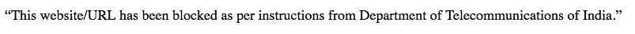

Analysis of Censorship on Jio Network
Reliance Jio Infocomm, most commonly known as Jio is an Internet Service Provider in India. One day while surfing the internet on Jio, I came across a censored website behance.net. On the HTTP version of it, the browser displayed a message saying that the website has been banned by the Department of Telecom, Govt of India.

The usual case with censorship in India had been that only HTTP websites were censored, not HTTPS. Interestingly, for the first time I noticed that HTTPS websites were blocked too. I became curious about how they were pulling this off, so I decided to fire up Wireshark and enquire.
After a little effort I found out that the HTTP connection was being intercepted by a system which was replying to GET packets after the initial hanshake which was later followed by RST packets. The way I could distinguish between the actual server and MITM system was by looking at the TTL field. For the initial handhshake the ACK came from somewhere 8 hops away. The response to GET packet came from 6 hops away. Not just once, but this was observed on multiple trials. This meant that the handshake was done with the authentic server, while the GET reply was coming from the fake server. The response packet contained an iframe pointing to a webpage on 49.44.18.34. The URL parameters of the webpage were similar to the ones observed in Netsweeper. A little analysis showed that this system was located 6 hops away. I suspected it to be the same system running the censor. For the next step, I tried to access the Netsweeper Control panel using the default URL and succeded at it. It was hence established that this system was the censor. On analyzing it with Nmap I found out that this was also a border gateway.
One of the ways to defeat such a censorship was to ignore the packets injected by the censor. For this I developed a Netcreeper, which obviously is a play on the word netsweeper. It uses netfilter to ignore all packets sent by the censor, while keeping the ones from actual server. Though it doesn’t work anymore because of the reason explained in the next paragraph.
A few months later, I again tried to analyze the state of censorship. This time I was surprised as the whole mechanism had changed. Instead of the censor being around 6 hops away, it was just 3 (or sometimes 2) hops away. Moreoever, it didnt seem as if the censor was allowing any communication between the user and the actual server. What was particularly interesting was that the Censor was trying to MITM on the connection. Though, the browser catches the irregularity and doesnt proceed any further.